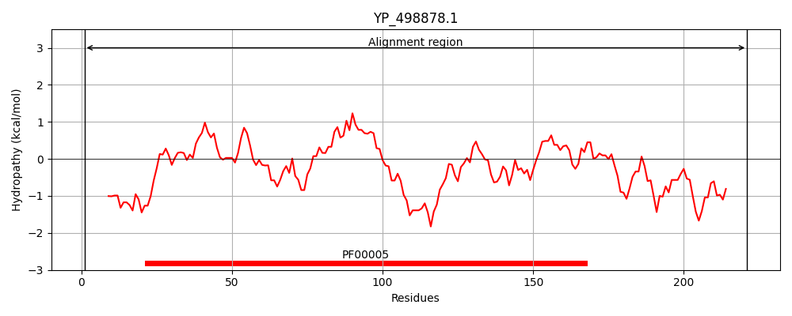
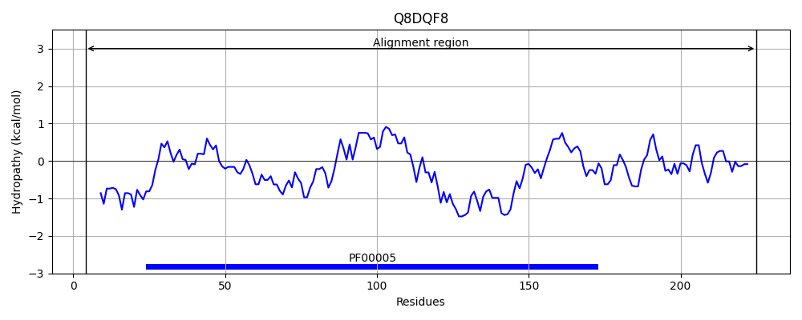
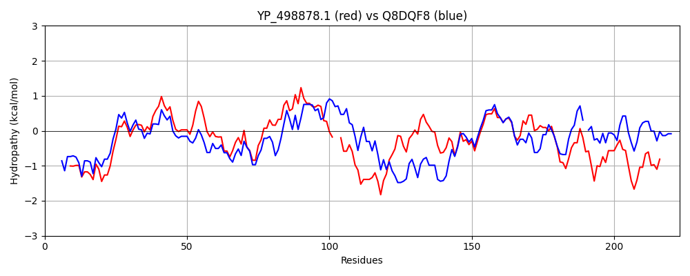

Hit Accession: Q8DQF8
Hit TCID: 3.A.1.122.20
Hit Description: gnl|BL_ORD_ID|16030 gnl|TC-DB|Q8DQF8|3.A.1.122.20 Uncharacterized protein OS=Streptococcus pneumoniae (strain ATCC BAA-255 / R6) GN=ABC-NBD PE=4 SV=1
Mach Len: 223
e:0.000000
Query TMS Count : 0
Hit TMS Count: 0
TMS-Overlap Score: 0.000000
Predicted Substrates:CHEBI:22582;antimicrobial agent
BLAST Alignment:
Score: 437 , Bit scores: 172 bits, E-value: 4.4e-54, Alignment length: 223, Percentage identity: 39
Query: 1 MLKFENVTKSFKDGNRNIEAVKDTNFEINKGDIIALVGPSGSGKSTFLTMAGALQTPTSGHILINNQDITTMKQKALAKVRMSEIGFILQATNLVPFLTVKQ--QFTLLKKKNKNVMSNEDYQQLMSQLGLTSLLNKLPSEISGGQKQRVAIAKALYTNPSIILADEPTAALDTENAIEVIKILRDQAKQRKKACIIVTHDERLKAYCDRSYHMKDGVLNLEN 221
++ +N+ +S+++G++ ++ +K+ N E+N+G+ +A++GPSGSGKST + G L TPTSG + Q++ + +K LAKVR +IGF+ Q L+ L Q + L+ + + ++ + ++ LT + LPSE+SGGQKQRVAIA+AL NPSIILADEPT ALDT+ +++++L D K+ K I+VTH+ + AY R ++DGV++ ++
Sbjct: 4 LISLKNIFRSYRNGDQELQVLKNINLEVNEGEFVAIMGPSGSGKSTLMNTIGMLDTPTSGEYYLEGQEVAGLGEKQLAKVRNQQIGFVFQQFFLLSKLNALQNVELPLIYAGVSSSKRRKLAEEYLDKVELTERSHHLPSELSGGQKQRVAIARALVNNPSIILADEPTGALDTKTGNQIMQLLVDLNKE-GKTIIMVTHEPEIAAYAKRQIVIRDGVISSDS 225 | Protein Hydropathy Plots: |
|---|
|  |  |
Pairwise Alignment-Hydropathy Plot:
|
|---|
|  |